Extension Key: doc_tut_quickstart
Copyright 2003,
This document is published under the Open Content License
available from http://www.opencontent.org/opl.shtml
The content of this document is related to TYPO3
- a GNU/GPL CMS/Framework available from www.typo3.com
Getting Started 1
Introduction 2
What does it do? 2
Screenshot 2
Video 2
PDF version 2
Translator's notice 3
Dedicated to 3
Installation 4
Installation A - zip-file 4
Installation B - Windows Installer Package 5
Check the installation 9
More details about installation 11
General principles 12
Backend and frontend 12
Pagetree 12
Special pages 15
Page content 19
Edit and create pages and content 23
Edit page 23
New page 25
Move page 30
Visibility settings - hiding pages, timing appearance etc. 32
Rich Text Editing: Bold, Italics, Bullet lists, Insert images 34
Make links 35
Content element types 37
Frontend editing 41
Password protected pages 43
Create users/group 44
Create login form 47
Create restricted page 48
Special content elements 50
Email form 50
Search box 53
Guest book 55
Site map 58
News plugin 59
Web applications 63
Inserting a newsletter subscription form 63
Backend modules 68
Tracking backend users 68
Changing backend language 68
Templates 70
Making changes to the template 71
The Setup field 73
The Object Browser 74
Change template? 76
Content in multiple columns 78
Creating another website in the database? 82
Controlling multiple domains 83
Starting up new websites 85
Template disclaimer! 85
Image archives 87
Managing files in TYPO3 87
Browsing the image archive 89
Uploading images to the archive 89
Note on image processing in TYPO3 90
The List module and Clipboard 91
Using the List module effectively 91
The numeric clipboard pads - managing many elements 91
Selective editing 93
User Management 96
Distributed maintenance 96
Backend users 96
Setting up user permissions 97
Groups 101
Creating a new user for the Fan Club site 105
Simple news workflow 108
Starting a workflow process 108
Configuring a workflow 114
Requirements 117
Where to go next? 119
This tutorial will introduce you to the basic principles of TYPO3. You will get started hands-on with your first TYPO3 website. After this tutorial you will have an idea of the capabilities of TYPO3 as well as complexities involved.
This tutorial will require you to install some software. If you just want to get a feel for TYPO3 before installing anything you should take a look at the demo-site at http://demo.typo3.com/ first.
Professional creation of templates and development with TYPO3 in general are not covered in detail in this document! That is done in the next tutorial - Modern Template Building, Part 1 - and basically the remaining body of literature on TYPO3 development!
The example website in this tutorial is for a football club called "FC Bigfeet". The website looks like this:
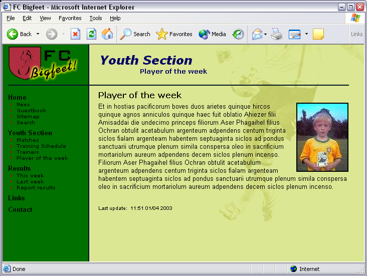
With this simple website you will learn to:
Edit and create pages, content on pages, insert images, tables, bullet lists, links etc.
Create password protected areas of the website.
Insert special content like email forms, search boxes, site maps etc.
Create a guest book or a message board.
Change colors, background images, fonts - even how to select another template!
Manage backend users that maintain different parts of your website
Create a workflow for news item creation on the front page
How TYPO3 organizes pages in a tree structure and stores content.
There is a video soon as well. Hang on....
If you would rather like to read this tutorial as a PDF document you can download it here.
Not many of the documents which are meant for TYPO3 developers are available in other languages. There are different reasons for that. One important reason is that the common language we use within the international developer community, is English. Even if an open source community like ours could manage maintaining the big amount of documentation which exists for TYPO3 in several languages, the developers soon wouldn't speak about the same, just because of their different languages.
That's why basically all documents dealing with the development of TYPO3 will be available only in English. And the central point for discussions will for the next period most likely be the English mailing list.
This tutorial is meant to help you getting started with TYPO3. For this reason we decided to allow the translation of it into other languages. In the localized version of this document please don't wonder about the use of English words mixed in: If you want to understand the English documents later on, it's important to get used to the English termini from the very start.
I would like to dedicate this tutorial to:
All my TYPO3 friends I have got from the snowboard tours - meeting you and realizing there are people behind the emails is worth it all.
My most lovely wife, Rie - thanks for all the patience and love you have shown, even when the work load needed your shoulders as well.
My savior, Jesus Christ - thanks for creating such a wonderful world with all its potential for us human beings to create beautiful things as well. Thanks for being the way and the truth and the life.
Happy reading!
- kasper
TYPO3 is a web-application based on PHP4 and MySQL. Therefore you must have access to a web server with PHP and MySQL in order to try out TYPO3.
If you already have access to a web server with PHP4 and MySQL then you can select "Installation A" below; you will have to download a zip-file, unzip it on your server space and that's it.
If you do not have a web server then select "Installation B" - that is a Windows Installer that installs all needed software (Apache, MySQL, PHP4 and TYPO3) in a few clicks - and removes it all afterward if you like to.
Go to typo3.org to get the quickstart.zip package.
In my case I have a local Apache web server running. The web root directory is in c:\apache\htdocs - this is where I'll unzip the package (this is the same location as the installer package uses).
Go the the URL where you unzipped the files:
In a brief second you will see this screen:
... but quickly you are directed to this screen (below) where you enter your database username, password and localhost.
In my case no username and password were needed (which is of course not very secure :-)
Then enter a name for your database. In my case "t3_quickstart" is selected. I always prefix TYPO3 databases with "t3_". That is nice if you have many different databases.
The final step is to "dump" some content into the database. A new database like "t3_quickstart" contains nothing of course - this step will put in a lot of information for our example website, e.g. users, pages, content etc.
If you see the "GO" become red now it means you are finished! Congratulations!
Well, let’s check if it actually works now. There are two things to check - the frontend and the backend.
(Read on in the section "Check the installation" after the "Installation B" chapter.)
Go to the package page on typo3.org and download the "WAMP - quickstart" Installer (thanks Ingmar) which contains the QuickStart website. The download is 28+ MB but worth it in terms of the trouble you save compared to installing on existing webservers - at least if you are here for a quick'n'dirty test of TYPO3!
Click the download link, go for a bag of sweet candy in your nearby store and when you are back you will see this:
Click the "Open" button to start the installer.
Then press "Agree" on the license screen. Notice that for once you can (probably) do this with perfect conscience since the GPL actually allows you to receive, copy, modify and distribute TYPO3 freely as long as the same rights to do so is passed on to the next recipient. The basic principle of GPL is that software stays free! (And that includes any modification / addition you make to TYPO3!). So just pass it on to your friends!
Next... next... next...
TYPO3 installs itself in your start menu!
Probably you will accept this unless you have something else in this folder:
Then the thousands of files related to Apache, MySQL, PHP and TYPO3 are uncompressed to your hard disc. This takes a couple of minutes.
Errors? If in the process you encounter an error like the one below (a file with a special name that cannot be written) most likely you can just ignore it. I know it sounds a little odd to document stuff like this, but... :-)
After installing the files you are finished with the installation:
The final installation in "c:\apache" takes up approximately 140 MB of disc space and includes thousands of files. This is not all TYPO3 - remember both Apache, MySQL and PHP was installed...
In the START menu of Windows you can now find TYPO3 installed:
Before you can play with TYPO3 start the two servers; "start MySQL" and "start Webserver".
When you start the web server (Apache) you will see an old DOS window. Don't close this window - it must be open, otherwise the web server will just shut down again. You can minimize it of course.
Next time you start your computer and want to work with TYPO3 you will have to start the web server again. MySQL has been installed as a service (has a little traffic-light icon in the task bar) and will be running already.
Type in "http://localhost/" and you should see this screen:
If you see this it means you are finished! Congratulations!
Well, let’s check if it actually works now. There are two things to check - the frontend and the backend.
(Read on in the next section "Check the installation")
The frontend is a term for the website TYPO3 generates. This is what your visitors will see - this is the product TYPO3 creates for you! The frontend should now be visible at the original URL you typed in (In my case it was http://localhost/quickstart/). You should see this screen after a second:
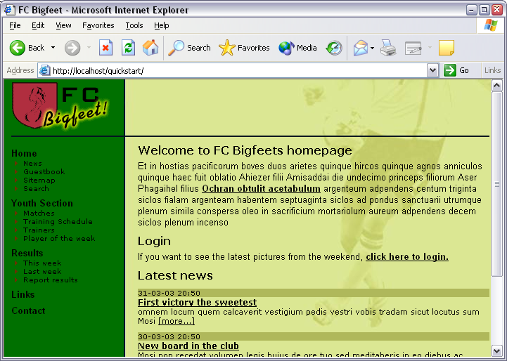
You can click the links in the menu to the left to explore the pages on the website.
The backend is a term for the administration interface you use to manage the website content in the frontend. In the backend you edit and create pages and content. The backend is normally accessible from the subdirectory "typo3/" of the installation. So try to type in "typo3/" after ".../quickstart/":
Now, type in the username "admin" and the password "password":
TIP: Make sure that cookies are enabled in your webbrowser! If you have disabled cookies you cannot login!
If you typed the correct username and password the screen will show you this:
Now, for the second time - and this time I really mean it - congratulations! TYPO3 has been installed, the frontend is working and the backend has let you in. You are ready to play around.
Please note that this stepwise guide to installation only took you through the most basic requirements and is designed to get you quickly started for testing and development purposes. When you need to install and configure TYPO3 for production environments or serious development you must read and understand the background issues described in the document Installation and Upgrade of Typo3. Further there is a mailing list and archive for seeking help on installation issues.
As you know from the installation TYPO3 is divided into two areas - the backend and the frontend. While the frontend is for everyone out there on the web - it is the website TYPO3 produces - only you and your content contributers are allowed access to the backend - the administration of the website. A username and password is always required.
In the backend there are a lot of modules in the menu to the left. When you want to edit and create pages, select the "Page" module:
Each module has it's own content to display. Since you are the administrator you have access to all modules. But there are other "normal" users - they have access only to the modules you have selected for them!
Try to click the various modules in the menu and see how the content frame changes.
The header "Web" in the menu is called a "main module" and all the modules listed under it are "sub modules". All modules under the "Web" main module will show a dual view in the content frame - the page tree (left #1) and the module content in relation to a page from the page tree (right #2).
The page tree can be expanded by clicking the plus/minus icons (#3). This works exactly like folders on your own computer. Actually you can think about the page tree as a directory structure where web pages are organized in a hierarchy with main pages, sub pages and sub-sub pages etc.
The next important thing to know about the page tree is that you can click both the page icon and the page title - and that it makes a difference!
If you click the page title you will see the current module display some content in the right frame:
In this case the "Page" module is the active one and then you will see the content on the page shown in the right frame. From here you can edit it etc. We will soon discuss that.
If you click the page icon instead of the title a little context sensitive menu appears. This is sometimes referred to as a click menu:
Notice: If you use older browsers the menu will not appear close to the icon but in the top frame of the backend instead. Further, be patient - the menu might take a few seconds to appear!
In the context menu you can select options that are related to this page! For most of them it is obvious what they do - try to play around with them if you like. For this example I have selected "Show" which means I will have another browser window opened and see this specific page shown in the frontend:
Notice how this page was shown in the new window by calling the script ".../quickstart/index.php?id=13" (#1). In TYPO3 every page is stored in the database (in a table called "pages") and each of these page-"records" has a unique number (uid). Here the parameter called "id" was set to the value "13" - and apparently that must have been the uid-number of the page called "This week" in the page tree!
Further you can see the page content (#2) is the same as you saw (if you noticed) in the left frame of the Page module when you clicked the title! We will return to that.
Then notice the page header (#3) - here the title of the page we viewed is shown ("This week") but the parent page in the page tree - "Results" - is shown as well. This communicates the logic of the page tree - that the "This week" page is a sub page (child) to the "Results" page (parent).
The final thing to notice is the menu in the left frame. This clearly reflects the hierarchy we also saw in the page tree:
This is for people who wants to understand how the tree structure works technically in the database:
Technically the relationship between a page and sub pages is established by the field called "pid" (parent id/page id) in the pages table in the database - the "pid" field of "This week" page will contain the "uid" value of the page called "Results".
By holding the mouse over the page icon of the "Results" page for a second you will see this title-text appear:
This tells us that the page "Results" has the uid-number "4". We know that the "This week" page had the uid "13" (and the pages "Last week" and "Report results" have uids 12 and 11).
If we go to the module "phpMyAdmin" and browse the "pages" table (which contain all the page header records) we should be able to see this relationship quite easily:
Clearly the three subpages to "Results" has their "pid" field values set to "4" - as we would expect.
Now you have learned that
Pages (and all other records by the way!) are uniquely identified by their "uid" field number - sometimes referred to as the "id"
Pages (and all other records!) point to their parent page by their "pid" field number.
Maybe you noticed that some pages from the page tree was not shown in the menu of the website? Well, the pages were these:
The "Log in" page (#1) was not shown because the page type was set to "Not in menu". This is useful if you want to create a page which should not appear as a menu item. Still you can access the page by creating a link to it manually - or just type in its id-number in the URL directly!
Setting the "Not in menu" mode for a page is done by editing the page header:
The "Team pages" page (#2) is not visible because it has been access restricted. This means it will only be shown when a frontend user has logged in. This is covered later in this tutorial. But the short story is that you edit the page header and select the user group you want to allow access for:
Finally the two so-called "sysFolders" are not displayed (#3). You create a sysFolder like you created the "Not in menu" page - simply select "sysFolder" as the page type (see previously).
But what is it? Well, by default pages created in TYPO3 are meant to contain web page content. They appear in the menu and can have a title. 95% of all pages are used like that. But pages can also serve as simple containers of database elements that are not meant to be content on a visible web page. This is what sysFolders are for! Use them just like you use folders on your computer's file system to store different files in an organized manner! In the same way sysFolders are "folders" that nicely organize database elements inside TYPO3!
In this specific case the sysFolder "Users" contains the website users that can log in to the website (more about that later on). You can view the content of the sysFolder by using the "List" module (that is the "Explorer" inside of TYPO3...):
Apart from the page types that did not show up in the menu there are also two mysterious pages with a "shortcut icon":
A shortcut is a neat feature if you have a page (empty, without content on) that should simply jump to another page directly! That is very convenient if you still want the link to appear in the menu for instance!
In our case the "Home" page jumps to the frontpage and the "Results" page to "This week". Try it yourself!
You create shortcuts by editing the page type. For the "Home" page it looks like this:
You use the Element Browser to select a page to refer to. The Element Browser is used to create relations between records and files in TYPO3's editing forms. You can read more details on the Element Browser here.
For the page "Results" the shortcut is a little more fancy - it simply jumps to the first sub page it finds! That is in our case the "This week" page:
The "Shortcut mode" is a so called secondary option to the "Shortcut to page" field - that means the field is only shown (in the palette / top frame) when you click the "More options..." icon (see picture above).
Now, what might all the other interesting page types do? Well you can find out directly if you just click the little "?" icon close to the field:
Then a window like this pops up:
This is called Context Sensitive Help and can be found for almost all elements in TYPO3 where you need some information about it's function! Use it! It's easy and it's right at your fingertips when you work inside the system!
Now we have looked at the page tree, seen how the page tree is reflected in the website menu hierarchy and how pages can be viewed etc.
The next question is - how is content on a page organized? Let’s take a look at the "This week" page again:
The page content on that page is made up of three page content elements - here numbered 1-3. And because each content element can have a different type you can create pages with very flexible structures! In this case the page consists of a "Text" type content element, then two "Table" type content elements.
This method of constructing pages is a very foundational concept in most websites made by TYPO3. The method of putting together pages of content elements is also known from other CMSs today. This makes TYPO3 an "element-based" CMS. It gives a lot of flexibility but yet it makes the pages consistently designed - as it is one of the objectives of a CMS! The alternative method is a more fixed approach where a page has a fixed number of content areas - one for header, bodytext and image for instance. TYPO3 can do that as well (it can allow for anything you like!) but most likely you don't want that in the end. If you have some questions to professional implementation techniques for template-designs, content elements etc. please look in the tutorials called "Modern Template Building", Part 1 and Part2+3. For now, please note that these documents are on a far higher level than this one and you should take one step at a time if you are a beginner to TYPO3.
Well, back to the content elements on the webpage; take a look at them in the backend:
Make a comparison of the frontend and backend views now. Can you see how the elements from the backend are clearly the same as those in the frontend?
Try to rearrange a backend element by moving it up in the order:
This will yield this order from the top:
... and on the webpage it looks like:
This is for people who want to understand the technical side of content elements and pages:
Remember how the page records had a field, "pid", which pointed to their parent page? Well, page content elements (records) - and any other database record configured for the TYPO3 backend - have that as well. Looking in the phpMyAdmin module again we see that the page content elements (table: "tt_content") with uids 18-20 all point to the page uid "13" - the uid of the "This week" page:
It's that logical!
We know that pages store their visible content in page content elements. So editing a page must be editing page content elements!
It's really easy to edit page content in TYPO3. Just select the Page module (#1), click the page title of the page you want to edit (#2) and in the "Columns" view (#3) you click the edit icon (#4) of the page content element you wish to change:
This brings up this edit form:
First of all the field "Type:" (#1) tells you the type of page content element! In this case "Text". It could also be "Table" (like you saw earlier) or "Image" or "Text w/Image" etc. See for yourself! Each content element type has it's own look and fields for content and by inserting different elements you can achieve great diversity on your website.
The "Header" field (#2) contains the header and the "Text" field (#3) the bodytext. On the webpage this corresponds to:
Try to change the header field value and press "Save document and view page":
Because you saved by the bottom "Save document and view page" you will automatically have the frontend window shown to you in a few seconds:
What TYPO3 did was to send the change to the webserver, update the database with the new information, then clear the page cache and regenerate the page - the change is instantly online and people surfing on your website will now see the new header instead of the old! It's that easy and fast to maintain webpages with TYPO3!
Instead of clicking your way from the "Page" module to the page tree etc. there is also an "Edit item" in the click menu which also brings up the Page module:
If you want fast access to your page content elements you can change the Page module view to "QuickEdit" instead of "Columns" - then the first content element on a page is shown right away:
Creating new pages is very easy. Since pages are always organized in the hierarchy of the page tree you will have to settle for a position of the page first. Of course you can change that later if you like.
To create a new page use the Page module in Columns view to start the "New page" wizard - that will help you to find the right spot to insert the page:
Then a position selector will appear. By this you can click the right position for the page visually:
Finally a form for a new page is shown and you can enter a title for the page:
Save document and close.
Now the page tree should be updated:
And if you click the page icon of the new page "Topscorer" you should see that the menu in the frontend has been automatically updated as well!
Notice that the page is referred to by the id "27" - so the new page automatically got the "uid" number "27" assigned during creation.
The page is still blank - we need to create some page content elements on the page!
In the Page module, click the page title of "Topscorer" in the page tree and then the button "Create page content":
Immediately you will see a nice form like this (below). This allows you to select a page content element type - as I said earlier different content element types create different kinds of content on the web page.
Let’s create "Text with image below":
Right away we get this form. Now enter some dummy content and select an image from your hard drive (find a small jpeg image):
Press the "Save document" button. Now the image is uploaded to the webserver and attached to the new page content element. This should look like this if everything went fine:
On the web page the page now looks like this:
Back in the Page module the new content element is clearly shown:
Notice: Missing the thumbnail? If you don't see a nice little thumbnail of the image here TYPO3 is probably not configured correctly for using ImageMagick. This is most likely the case if you did not use the Windows Installer Package (see the install section of this tutorial). Please refer to the information on installation found on typo3.org and the install mailing list archives. You can complete this tutorial without these features working though.
Click the button "New content" to create another content element with a bullet list after this one:
This time we have to make another selection in addition to the first one - where should the element go? Before or after the current page content element?
We insert it after the current. Now there is only the content of the bullet list left:
Notice that the "Type" was preset to "Bullet list" - this could have been selected manually instead. And you can change it as you like later on! If you want to know about the various content element types available remember the little "?" icon - help is right at your fingertips!
Now the page has two content elements, a "Text w/Image" type and a "Bullet list" type - in that order:
In the Page module this looks like this:
You just used the "New content" wizard to create new page content. However the wizards in TYPO3 just makes a common task quick and simple by taking you straight to the important options. But under the hood all the features can be selected, fine tuned and controlled manually. You will realize this as you work with TYPO3. Take your time to explore the buttons and options. There are many possibilities and you can only get to know them if you take time to play around!
Here are a few examples of interface features you can try:
Creating a new page content element after the first one can be done by this button (#1). You will by default get a "Text" type element - just change the type to whatever you want. The button "Move record down" (#2) can be used to change the order between many content elements on the same page/column. Likewise you can use the "Copy", "Cut" and "Paste after" features from the click menu (#8) - they even allow you to make copies and move elements to other pages! The "Hide/Unhide" button (#3) is a quick way to change the "Hide" flag of the element and the garbage can (#4) allows you to delete the element totally (actually it can be restored if you do it by accident).
If you need to edit only the content in the body text area of the content element it's a nice feature to click the "Edit in Rich Text Editor" button (#5). This will bring up a "full-screen" window for editing the text - nice if there is a lot of text! Clicking the icon of the page content elements will as usual bring up a context sensitive menu for the element. Finally you can actually edit not only one page content element at a time but two (or more) by clicking the Column-edit icon (#7).
Moving a page is also very easy with the wizard available from the Page module. Let’s say we want to move the page "Topscorer" from its current position to right after "Sitemap" in the "Home" section:
Then you will see a branch of the page tree and by clicking the top page you go up one level:
And by a single, logical click you have moved the page to the new position:
The page tree is instantly updated:
The "Move page" wizard is absolutely the most intuitive tool for beginners. However when you want to get the bigger picture of how to move elements - including pages - around in TYPO3 you should use the internal clipboard. It works pretty much like you know it from windows: You right-click a document, select "Cut", then right click the folder where you want to insert it and select "Paste". The same principle is implemented in TYPO3. Let’s use that to move the page back again:
"Cut" the page:
"Paste after" the "Report results" page:
Answer "OK":
That's it! The page is back where it belongs:
Notice that the same principles of copy/cut/paste can be used with not only pages but page content elements as well - well, in fact any database element or file that TYPO3 manages is subject to this functionality! This is a great example of how TYPO3 uses the same concepts consistently and throughout the system - so once you have learned a feature, a lot of other features make sense to you as well! If you open your eyes to it you will have many of those "Aha!" experiences when you see how things are designed to fit together.
A feature you will find for many elements - in particular pages and page content elements - is the publishing control fields or visibility settings. They look like this for pages:
For content elements they are in the bottom of the form:
Try to check the "Hide page" flag:
Nice as it is the page icon even becomes dimmed in grayscale and has a little red cross over it - it's now hidden!
This means you cannot see the page in the frontend:

(Very important that you select "Show" for the "Last week" page!)
See... no "This week" page there!
However if you actually go directly to the "This week" page you WILL see it anyway:
... because when you are logged in as a backend user hidden pages can be previewed - as indicated with the little box in the bottom of the page:
But! - that is for your eyes only. No one out in the world can see the page before you un-hide it again!
Hiding pages and content element is probably the most typical kind of visibility setting. It's so common that it actually has its own item in the context menus:
But you can also determine when a page should go online - which date! For instance try to enter the code "d+10" in the "Start time" field:
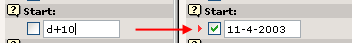
Automatically the date is set to the current date plus 10 days! If you save the page and hold the mouse over the icon you can also see this setting reflected:
And guess what - this page is currently not visible and will automatically be visible the 11th of April year 2003, 10 days later! That's how easy it is to control publishing of information based on Start times. The same principles work for the "Stop" field of course. And for page content elements, news elements, guest book elements - you name it. Same principle - many places - easy to understand.
When you are working with the body text on your pages you can use the same kind of formatting options as you are used to from your word processor. If you are using TYPO3 with Microsoft Internet Explorer you have access to a Rich Text Editor (RTE) for the body text field. "Rich Text" means that you can apply formatting to the text in addition to just writing it.
Try to edit the body text field of the new "Topscorer" page:
Mark the text "my first" and click the "B" (Bold) to make the text bold:
By a using the buttons "B", "I", "U" and "Center Justify" you can easily achieve this look of the paragraph:
Press the "Save document and view page" button - you will see this in the frontend:
You can create a bullet list just as easily. Just click the "Bulleted list" icon and enter a few lines:
Save and view - the frontend will show:

As you can see - this gives you two choices: a) Will you create bullet lists "inline" in the body text fields or b) will you create them by separate content elements? You can mix the two approaches. Personally I find it absolutely most convenient to just create bullet lists inside of body text fields with the RTE - but if someone with Microsoft Internet Explorer is going to edit the list it's usually very hard! And you might have "political reasons" for not inserting bullet lists in body text (keeping the body text "clean").
The Rich Text Editor may be very easy to use, but it also poses a lot of technical challenges when you investigate the details. There is extensive documentation available for the RTE. Read more in-depth about the RTE here and how to configure it.
Hyperlinks are what glues the internet together some say. In TYPO3 you already have links automatically made for you since the sheer creation of pages in the hierarchical structure of the page tree has generated the menu in the left frame automatically.
But you still might want to link from a piece of text to another page, a file, another website or an email address, right?
This is very easy if you use the Rich Text Editor:
Simply mark the text and press the "Insert Link" icon:

Then click the title of the guest book page:
... and the text is linked:
In the frontend this will produce a link as you would expect. Click it and you are taken to the page with the guest book!
Before I told you that it might be a problem to use the Rich Text Editor if you expect to edit the content in raw form later on. You can simulate that by editing the whole content element and selecting the "Disable Rich Text Editor" option in the bottom of the form (before editing anything):
The "Text" field will now look like any ordinary form field:
First of all you can see that the link to the "Guestbook" page was made by a TYPO3-specific tag, <link>, combined with the page id. This makes it very easy for people without the RTE to create links as well! This is simple enough to write by hand. (Note: The internal "<link>" tag is converted to a proper HTML "<a>" tag when the page is generated).
Apart from that you can see the bullet list has been converted to a series of lines encapsulated in <typolist>-tags - also custom TYPO3 tags. These are also converted to a real bullet list by the template engine when the page is generated later on.
The very first line contains regular HTML-markup for the bold, italic and underlining plus center alignment of the whole paragraph.
You can create links to local files and external webpages - even links directly to a specific content element on a page (see the page "Last week" for an example and figure out how by yourself!).
Finally links to email addresses can be created as well of course. Very easy.
Now, since we have disabled the Rich Text Editor why not just use the Wizard icon for full-screen editing:
Now write a new bullet list item, mark it and press the "Insert Link" button. Then select "Email" in the link type menu and enter your email address:
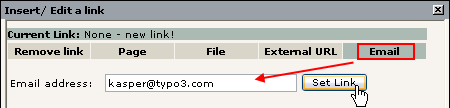
The result should be as expected after saving:
- a link which opens the user's email client and makes it ready to write a new email:
As you already know there are a number of page content element types available and combining them is the key to creating diverse web pages so not every single page on your site looks the same!
As a general rule of thumb - the longer down in the list an element is, the more advanced or rare it is in use. The absolutely most used element is the Text or Text w/Image element.
Notice that some elements carry with them a little wizard. For instance try to edit one of the result-lists from the page "This week":
The "Text" field which normally contains pure body text now contains the table content apparently organized in some systematic way:

The table is constructed by interpreting each line in the "Text" field as a table row. Then the vertical line, | , is used to separate columns from each other. This is the "low level" way it works and it could be maintained by hand. But the "Table wizard" would be the right tool to use for most people (see image above, right). This will bring up designated form fields and buttons for adding, deleting and moving table content around.
For instance adding a new row would be this easy:
Then add some content to the row:
Save the content from the Table wizard and back in the Text field the real, underlying content looks like this:

When the web page in the frontend is refreshed we will see this:
If you wonder how the background color could be changed - read on!
From the dawn of time TYPO3 has held to the concept of primary and secondary form fields. The editing forms in TYPO3 contain a lot of fields and can be extended with even more. But many fields shown at the same time become very hard to overview for the average user. In particular if you are a beginner and have lots of new things to keep inside of your head already.
The concept of primary and secondary fields means that normally you see only the most important and typically used form fields (primary). And more detailed options are hidden in the secondary fields which are shown on request.
Consider this form:
Three fields shown - easy to overview.
But if you click one of the icons next to the fields you will find secondary options shown in the palette (top frame):
That is very clever - we have many options, lots of details but they are stowed away until we need them so we don't get confused.
The downside is when you need one of these secondary options and can't remember "behind which icon" it is (or if you use the field a lot) - then it might in itself be confusing to find them!
Therefore you can activate the option "Show secondary options" in the bottom of all editing forms:
The result is a big - and possibly confusing - form. But with all options available at once:
Notice how each row of options corresponds exactly to the content of the palette in the top frame if you clicked the "More options" icon like before!
So how do we change the background color of the table? In the secondary options for the "Layout" selector:
(The label "Color 2" refers to the color with that name configured in the website template.)
The final note on editing pages is the frontend edit facility. I'm sorry that there are so many ways to do the same thing. In time you will appreciate this since you will find out what you like best and you can accomplish more work in less time because TYPO3 offers these features.
But frontend editing is not just a new button - it might actually be a revolution to the way you or your content contributers can work with the system.
You have probably noticed the small edit-icons that have appeared on the web page:
Try to click one of them:
Instantly you are taken to a form where only the header field and other relevant information can be edited right away!
Try to change the header text and press "Save document and close" - you are taken back to the webpage and the change is immediately there:
This is what frontend editing is - very intuitive, great for correcting small mistakes, making small adjustments, excellent for poorly skilled content contributers on your team etc. It is the context sensitive editing method - raw power at your fingertips.
No, of course not - only when you are logged in in the backend. Otherwise the icons are hidden - and if anyone could click it we would be immediately rejected. Try it yourself - log out in the backend:
If you still have a frontend page with icons then try to click one - you will see this screen instead of the edit form:
... and when you refresh the webpage you can see that the icons are gone now:
Now, log in again at http://localhost/quickstart/typo3/ (username = "admin", password = "password")
The frontend editing feature is also described in more details on this page - Frontend editing.
Now you know how to create and edit pages! That was not so hard, was it? Quite easy to become a webmaster with TYPO3. Later I'll even show you how you can delegate that work! The point of a CMS is also that you can have many users maintaining content on the same website! With full control over access rights etc. But that is described in the end of this document.
So one thing is to make web pages for all the world to see. What if we would like only a part of the world to see them - our football team mates? Can we add password protection?
Actually that is already done for you on the website for "FC Bigfeet":
These pages in the page tree are in fact only accessible from the frontend if you have a username and password!
If you want to log in, go to the page "Log in":
Then enter the username "john" and password "football" (for your convenience it's the same password for ALL users in the website for now). Make sure to enter it precisely as stated here - upper- and lowercase characters make a difference. "John" will not work - it's "john"...

Click the "Login" button - you are now directed to the "Team pages" (unless you did something wrong...)
Also notice that now the formerly hidden pages in the menu are visible:
Before you can create access restricted pages you must first and foremost have one or more frontend users and groups. These can be created before, during or after creation of your website. The order doesn't matter.
Now, wait a minute! How many kinds of users are there?
Well, there are only two kinds. Remember that we have two areas of TYPO3 - the frontend (website) and the backend (administration).
A frontend user (orange icons) can log in to the website of course. They cannot change content (since they have nothing to do with the backend!) but they merely exist because it allows us restrict access to information on the website!
Frontend users (also called "Website users") are created in the system where we want to create them. In our case we have made a nice sysFolder called "Users" for both users and groups. The only requirement of this storage place for the frontend users is that we tell the template that this is the place to look for the users when a login request is sent - more about that in the section on Templates.
If you want to create web applications with user profiles in TYPO3 you will probably use the frontend users as a basis for an extension which can add additional database fields to the user table - thus you can store and manage custom information about website users!
A backend user (blue icon) works in the backend and is concerned with changing the information behind the scenes. Because backend users are concerned with the administration of a website they have nothing to do with the access restriction on the website itself (which is only partially true of course since backend users can preview hidden frontend pages).
Backend users can be created only one place - in the page tree root (pid = 0) - and only by backend users that are "admin" users (have the admin-flag set, which is indicated by the red colored icon!) since they are the only users with access to records in the page tree root:
The three blue backend users (#1) are configured so they can maintain a little part of the website each - more about that in the users section later on. The backend users groups (#2) would have been blue as well if the "Access lists" flag had not been set - forgive me for that...
Finally the "admin" user (#3) - the one we are working as - is red because he has total and unrestricted access to any part of the system!
As you can see we already have a sysFolder with a user group and two users.
The user group "Team" is really nothing but the title of it. Not settings or anything.
The users "john" and "irene" are configured basically the same - just a username, password and membership of a group:
(Ahh, that's right! You haven't used the List module yet - now, how hard can it be? Just click the icon beside John’s name and the good old context menu appears. Back on the home court again. I told you - watch out for consistently applied concepts!)
And here is John’s profile:
Let’s try to create a user. Since frontend users (like page, page content elements, news articles etc) are just database elements in TYPO3’s opinion the same process of creation can be used for a frontend user as for any other element. So this is even a general introduction to creation of new elements!
Ready? It's simple. First, click the page icon of the page where you want to create a new element:
Then select the "Website user" element:
... and enter the information. In this case username, password and group are required fields:
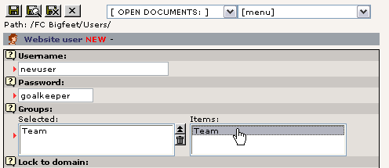
Save the user. If you click the page title of the "Users" sysFolder you should see this listing (provided the "List" module was the last backend module you used of course):

Go to the login form page again and see if it works:
We already have a login form. But what if we want another one on the frontpage? Is that a problem?
No, since TYPO3 constructs page content by a series of page content elements as you have learned we can simply insert a login box as one of the content elements on the frontpage! The question is rather where among the other elements.
Now, do the trivial: Page module -> Click "FC Bigfeet" -> "New content"
"Login form":
Select position:
Name it - save it:
If you enter a page reference in the "Send to page" box the login will be submitted to that page. This is used with the other box so the user is directed to the access restricted section directly. In this case we will just leave it empty which will submit the form to the same page - the front page.
On the front end you will see this:
As you can see we are already logged in - as "newuser". You can try to logout and login and logout and ... as you like. It should work.
Now you have:
Users and groups in place
A login form in place
(please see the
Template section on constants for
important information on configuring
the storage page id for the login form)
You need... to restrict some access!
Let’s restrict the whole section called "Youth Section":
Select the access to be only for the members of the "Team" group:
And save it. The page icon changes. Try to hold the mouse over the icon:
See! Access restricted to the "Team" group. Try to log in and log out. Works? Should do so.
Try to log out and view one of the sub pages to the "Youth Section" page. You will find that those pages can be seen! So only the "Youth Section" page was protected!? Yes, that's true - because you need to set an additional flag - "Include subpages".
Edit the page header and set the flag (bottom of form):
The page icon changes to include a double-forward arrow - this indicates that now all subpages are in fact protected as well!
Tip: "Include subpages" affects not only the Access setting - it also affects if a page is hidden or has a Start or Stop time set. Thus you can also time or hide a whole section by using this setting!
Basically access restriction works as simple as this - just select a website user group and that's it. From that point you just handle which users are members of which groups.
Groups... Ahh, yes, we have only one group right now! The "Team" group. If you add more groups then you can create different access rules for different users! For instance "john" can be a member of "Team" and access the "Team" section. "irene" could be a member of a new group used for access restriction of the "Youth section" and she would have access to that! The "newuser" (we created) could be member of both groups - and have access to both sections! Why not try it out! Go and play with it.
Finally the option "Hide at login" means that a page will not be visible when a user logs in! This is useful if you have pages with information only relevant for users not yet logged in. Of course the option "Show at any login" is the opposite - that will enable the page for display for any user who is logged in. No need to be a member of any particular group - if you are logged in you are shown the page.
Previously you have been introduced to page content elements in general. So you know how these work. In this section I would like to show just a few examples of special content elements that are nevertheless quite popular. For instance how can you make an email form? Or a search box to search your site content? What about a guest book?
Well, just read on and you will see.
We already have an email box on the website. If you go the the page "Contact" you will see such a form:
In the backend the content element that creates this form look like this in the Page module:
By the way, notice the "Thank you" page that is a sub page to the "Contact" page!
Now, edit the element. This is the form you see:
The content is apparently even more "code-style" than with the "Table" type content element! But as usual - click the wizard icon and you can edit the content with a tool that makes it all much easier!

As you can see the codes are transformed into this nice form. Here each field in the form is created by visual controls. For a field you need to enter a label of course (#1) and a field type (#2). These are the visible parts. You also have to give the field an internal name (#3) which is the one that will be shown in the email the recipient gets. In the case of "Input field" types you can also enter a default value (#4).
For all email forms there are three common values to be set: The name of the send button (#5), the subject line of the email being sent (#6) and finally the email address of the person that should receive the email (#7). This person is normally you! Or whoever on your team that is supposed to respond to feedback.
Now, let’s try to add a select box where people can select an item to receive. In "FC Bigfeet" we have year calendars, the club magazine and pencils that we send to people.
Simply select the "Selector box" type:

Then the "Refresh without saving" button (which does not save the content - just posts the content and redraws the form!)
Then enter this information:
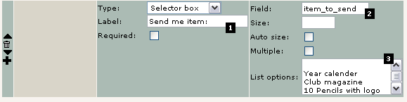
The label is obvious (#1). The field name "item_to_send" (#2) is not visible on the web page but as I wrote before - that is the name the email recipient will see to identify this selection! Finally each value you want in the select box is a line in this text field (#3) - as simple as that. Save the content from the wizard and view the page:
It's that easy!
Now, in the backend the new selector box was added in the lines of code in the "Configuration" field:
If you are curious about it try to look at the line and you might actually figure out the syntax of creating form fields without the wizard:
When you lose your patience you can seek help in the TSref document where a section tries to describe the details. But be forewarned - this is the low level technical matters that you are not used to yet!
Another important thing is the "Jump to page" - this field simply tells TYPO3 which page to jump to when the form is submitted.
In other words - when the user has filled in the form and pressed the "Send form!" button he will be shown this page which contains... an ordinary page content element with this greeting:
Quite simple - right? Very flexible.
On windows servers there is a good chance that the mail function will not work. If you send the form and get an error message from PHP then you are most likely without an smtp-server or whatever PHP needs to send mails. On UNIX this is normally working out of the box.
The next project is to implement a search box. That is even more easy and one has already been created on the page "Search":
The element itself is extremely simple:
Basically its only the content element type set to "Search" - that's all. In this case there is also a "Send to page" field but not used. Does the same as the "Jump to page" field for email forms - it tells the element which page should receive the search request (which must contain another "Search" content element in order to show results!). If not given the current page will. This is quite normal with search boxes.
When searching for the word "results" two pages come up:
Try to click "Report results" title:
You are then directed to the page and the search words are nicely colored in red. Cute isn't it...
The default search element you are using here is searching directly in page and page content element records. This is efficient enough for many smaller websites.
If you need professional rated searching in indexed content you can get that as well. In fact you can get anything for which an extension has been written (more about that later). For now you can try http://typo3.org as an example of the indexed search engine that TYPO3 offers:
The result set will display something like this:
Notice how the results are nicely organized in sections and sorted by their percentage of relevance.
The extension doing all this has the extension key "indexed_search" and the manual with more information about it can be found here.
A guest book is also a very simple thing to add. However stuff like a guest book, message board, news module etc is normally provided as extensions - and extensions need to be installed first. They might even need to be imported from the online repository, TER (TYPO3 Extension Repository) if they are not available on the server yet.
To install an extension like the guest book you simply go the Extension Manager (EM) and click the add icon:
In the view "Loaded extensions" you can see the list of installed (loaded) extensions:
As with the email form and search box a guest book - and normally any other web application (called a "plugin" in TYPO3 terminology) - is inserted by a page content element acting as a placeholder for the functionality:
The "Insert plugin" type is the main selector and secondarily the "Plugin" selector box is used to determine the plugin type. The options reflect (some of) the installed extensions:
We already have a general guest book - now let’s create one for the "Team pages" section which requires login by username and password:
Go to the Page module, click the "Team pages" page title in the page tree and select "New page" wizard (see previously):
Enter a page title:
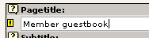
Save and close. Then create page content:
Select plugin "Guestbook":
And now, just guess how easy it is to insert news and message boards... :-)
And save the form you get:
Notice the "CODE" field - this contains some text codes which make the guest book appear - a good reason for using the "New content" wizard to insert the element since they are preset then!
Of course you can enter a title and other content elements to the page - but the main function is the insertion of this element:
And - voila! - the guest book is there! (I filled in a test entry here...)
If you want to manage your guest book - for instance remove unserious entries like mine above - then you simply go to the Page module for the page and you will see all guest book elements listed in addition to the normal page content elements:
Wonder how to edit it? Just click the icon of the guest book entry (remember - beware of consistent concepts!):
The same is true for the message board (as we use it). But not every plugin lists its elements in the Page module, so ultimately we should generally use the List module for management of elements if we want a common approach:
This brings me to the main point here - guest book entries are also just database elements in TYPO3 like pages, page content element, users etc; we can edit them, hide them, delete them and copy/paste them around with the already known set of tools in the system - consistent concepts... you will love them soon!
I'll not spend much time on the site map inserted - you know the principle already. A content element of a certain type with some additional settings applied:
Just notice the "Starting point" field - that determines from which page the site map is drawn! Likewise other "Menu type" settings uses this value. Instead of site map you can also insert other kinds of "link lists" based on the page structure and content elements on pages:
You are invited to play around with this now. Remember - when you need help it’s right at your fingertips:
The news plugin used on the website is from the "mininews" extension. So make sure that is installed (Extension Manager):
Since it already was installed we can now investigate how this plugin has been used. The important difference from the guest book is that the mininews plugin is inserted both on the front page (teasers) and on the news page (archive + details view)! The point is that the front page shows the latest three news items:
And by clicking the "[more...]" link the user is directed to the News page where the full story is shown:
On the front page you will find this content element in the bottom of the page if you look at the page with the Page module:
The content is:
Notice that first of all the "Listing mode" - a selector box specifically provided for the plugin element - is set to "Frontpage teaser" so the teaser and not the archive is inserted. Secondly the "Starting point" field is used to point to the page where the archive - which will list the full story - is found!
On the "News" page a similar element is inserted! Just the "Listing mode" field is different:

Well, think back to the guest book: News elements are elements like any other database element TYPO3 handles. The best way to get a complete overview of the elements found on a page is by the List module. Let’s try that:
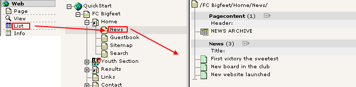
And how to edit one?
And create a new?
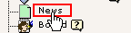
The Screenshots speak for themselves I think...
Now, what if I like another person to write the news articles for me? And what if I want to review the news articles before they get published? Can TYPO3 do that?
This is a situation that calls for a "workflow". Later in this tutorial exactly that is described for a simple situation like the one we need here. So hang on.
The term "web applications" is used for "programs" on a website that perform a certain task which includes real-time processing of data. For instance the guest book, a search engine, a message board, a calculation form for insurance costs or a membership registration form or online, searchable address book are all web applications.
Many such applications today are stand-alone applications with their own administration system etc. Content management systems are also known for having such features but normally within a framework that integrates the functionality.
TYPO3 is such a system - a web application platform - which greatly helps not only applying and managing but also developing such applications! With the Extension Manager the installation and distribution is as easy as a mouse click and with the Kickstarter you can get started in 2 minutes with your own applications. If you are interested in these issues you should watch the "Episode" videos you will find in the Video page on typo3.org. In addition a number of tutorials exist on the issue of extension creation, for instance the one made my Oliver Hofmann. Notice that this is stuff for the higher level and since you are a beginner right now don't expect either to understand it nor to develop anything before you are a little more experienced with TYPO3!
When you categorize Content Management systems you find some which approach the issue from the "Application Framework" angle and others from the "Page Tree" angle. TYPO3 belongs to the latter part.
However this does not in any way compromise TYPO3’s status as a Content Management Application Framework. Rather the page tree approach enhances the ability to serve exactly this purpose by offering the logical division of the page tree as containers for such applications. In other words: You can have both a guest book, news system, user management form and insurance cost calculation in the same system without things getting mixed up because each applications would normally operate within the boundaries of a single page! All elements for the application are stored there, all transactions are performed by the same plugin on the same page id. Makes perfect sense and order!
So the page tree backbone becomes the strength of the system even when hundreds of web applications in the framework needs an organizational structure!
Let’s now take a look at how we can extend TYPO3 by a web application which is not delivered with the system. For that purpose we will connect to the TER (TYPO3 Extension Repository) from the EM (Extension Manager) and import, install and apply a newsletter subscription system.
Generally you will go to typo3.org first and search for the application you need. When it has been found you will install it.
In the search for a newsletter subscription engine we found one which seems to fit the needs. Notice how the author has bothered to make documentation available! (#1). This is also very important for you to understand - that the documentation for TYPO3 is organized with each extension. In other words, where can you find all information related to the "Newsletter Subscription Module"? On typo3.org together with that extension! Therefore seeking documentation often requires you to first identify which extension you need help for - then go to that extension on typo3.org!
In the EM you connect to TER and find the extension with the key "da_newsletter_subscription":
The connection takes a few seconds and then this list appears:
After some seconds the extension is imported and you will see this message if that happened without problems:
In the list of "Available extensions" you can now find the "Newsletter Subscription Module" under "Frontend Plugins":
Install it, accept the "Make updates" (which will automatically create the needed database tables and fields!!)...
In the list of "Loaded Extensions" you can now see the new extension has been added:
Well, it's such a luck that the author of the extension actually made a manual! So on typo3.org you can access the index table and there is a detailed guide to the creation of both the subscription form, the categories and how to get the list of subscribers out of the system again!
Of course I'm not going to repeat all that! There was a reason for writing the manual of the extension in the first place.
But in short I have created a new page, a content element, two categories and an age selector:
A little more than this has to be done (changes to the template) but you can see that on the video where the process is shown live. And of course it is documented in the Configuration section of the manual found on typo3.org.
The resulting form will look like this:
The final point is that the extraction of the subscriber list is simply provided by a backend module that followed the plugin in the extension:
As you can see, when the backend module is activated, the page containing the web application on the frontend is activated and the list is shown. This also tells us another interesting thing - we could add newsletter subscriptions to not just one page but any number of pages on the site and still have a perfect order and control over the situation. Thanks to the page tree framework!
For more information on advanced extracts of subscribers see the manual for the Newsletter Subscription Module.
Many plugins are translated to languages other than English. However English is required to be the primary language of all plugins.
If a translation is available you can normally activate it by editing the "Setup" field of the template record of your website and insert this code line:
page.config.language = dk
This will activate the danish (dk) language and the form will now look like this:
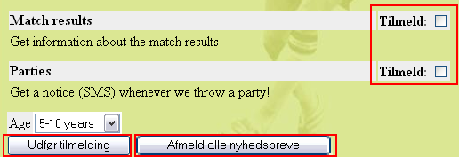
You can read more about template records in the Template section of this tutorial. For now I'll just leave this example as is without any explanation since this a whole science in itself! So you will know about it later. For the actual steps I took, watch the video!
What about tracking the login users? Can we do that?
Well, yes of course. Actually there already is an extension which provides a backend module for that!
So like before, import the extension "Login User Tracking" from TER:
Install it, "Make updates" (it will add a statistics table to the database):
And reload the backend:
And the new backend module is installed under the "Web" main module:
Before the registration of frontend logins will work we have to enable it in the template record (just like with the language setting for the newsletter form):
config.tx_loginusertrack_enable = 1
Unfortunately this is (currently) not documented well and I had to look into the source code of the plugin to figure this out. Shame on you, extension author (hmm, that is a slap in my own face. D'oh!). (Watch video to see it done).
Since the plugin has just been installed we need to login and out a few times in the frontend. After having done that the "User Track" module will show a nice list of logins:

The "Sess. lgd" tells for how long the user was logged in - I didn't have much patience I guess... :-)
A little side note here might be how to change the language of the backend! That is really easy. Users can do that themselves if they have access to the "Setup" module:
Just select another language than English and press the "Save Configuration" button in the bottom of the page.
Reload the backend interface and you will see the modules in Danish instead:
During this lengthy document you might have wondered time and again - how can I change that green background color? Or how can I put in my own logo. And the fonts - I want Times, not Arial and Verdana.
Before we look at these issues you must understand something fundamental about how most CMSs work: they separate content from presentation. This means the pages and content are stored in the database without any colors or fonts or background images attached to them. That information is instead located in the template and stylesheets which normally apply to the whole website when pages are shown. Thus a single change in the template will affect the overall appearance of the website for all pages. This is a great and very important feature of a CMS! Just ask people who made an html-file based website with 100+ pages and wanted to make a redesign...
Consider the "FC Bigfeet" website:
Dynamic parts: On this website the menu (#1), the page headers (#2) and the "Last update" section (#4) are indirectly dynamic parts of the page. This means they change from page to page automatically. We cannot directly affect these items per page. They are dynamically programmed parts of the template.
However the content area (#3) is a directly dynamic part of the page since this is where the page specific content is inserted. We can affect this by adding, removing and rearranging page content elements! This area is not at all a part of the template (excepts its formatting in colors and fonts) since we directly control it by the content elements.
Static parts: Apart from the dynamic parts the template consists always of the same logo (#5), the same background image (#6) and the same background color (#7). These parts are also a part of the template (like the indirectly dynamic parts) but they never change by any action. Always the same on each page.
So how does TYPO3 implement this principle? Well, you can read in-depth information about the recommended approach for professionally made website in the tutorial Modern Template Building. However this is written for people who are professionally working with web design in teams with developers, designers etc. So the level is a bit higher than this tutorial claims to be.
But the main point is - the template record. This is a control element that instructs TYPO3 how to handle a certain branch of the page tree. If this seems like an awkward approach to you at first then so be it - it's in fact highly consistent with what you have learned already and further it makes perfect sense when you later wants to make many sites in the same page tree including multiple templates etc.
If you look at the simple FC Bigfeet website in our case notice that the root page of the website contains such a template record:
Let’s try to change a few things in the template record, "NEW SITE, based on standard". Simply edit it:
For standard templates the "Constants" field is often the place to change values. Constants are later inserted in the Setup field and can be inserted many places. So one change to a constant may mean many changes different places in the final TypoScript configuration code of the template.
In our case, let’s add a red background color in the menu frame (see above).
After saving the template record, click "Clear all cache" in the "Admin Functions" menu:
Always do that if you edit template records directly (not needed when you use the Template module though).
The result is:
You can play with other values as well!
The better way to handle these changes is to use the Template module in the "Constant Editor" view:
You can access a lot of options here, there are visual explanations for most of them and you can select from various categories. You can also find the menu background colors listed here ("Basic" category):
Notice how this is really just a wizard that edits the constant from before called "menu.bgCol"!
Likewise you can easily change and upload images for use as logos or background images:
Here we change the current background image to be the logo instead (#1) and with the "Browse" button you can pick up a local image on your hard drive to use as a new logo - soon you will have a website for your company and not a football club!
Now, there is no reason for telling you more about these features since they are pretty obvious and the only way for you to get acquainted with them is to use them, play with them, see what happens. So do that!
Remember the notice about the required change in the template before the frontend user logins would work? This is the place to discuss that.
See, when the login form is rendered it needs to know in which page (sysFolder) to look for the users that are allowed to log in. This is done by setting a constant - "styles.content.loginform.pid" - to the uid value of the sysFolder "Users".
In this example, the uid of the storage sysFolder is "14":
So all we need to do is set the number "14" in this field:
This field is found among the 64 values listed under the CONTENT category of the Constant Editor. You can set the value manually in the "Constants" field as well of course.
The best way to edit a templates Setup or Constants field really is to use the "Info/Modify" view. Here you get direct access to the fields from the template record. This is done as a help for developers who will be using this a lot:
(Notice how there is a link (#1) below the menu block which directly points you to editing of the full template record if you need it).
In the setup field you find a few lines:
These are clearly strange codes to you and they do require a manual and some background knowledge to get done right! So don't worry.
The first line (#1) inserts an alternative sitemap to the default (which is quite boring), then a stylesheet is configured for the page (#2). This is used by the "mininews" plugin which has all it's formatting done by CSS (contrary to other parts of this standard template which is from the time where <font>-tags were mainly used). Finally we find configuration for the newsletter plugin (#3). This was needed to make sure people didn't need to first receive an email with a link before they could subscribe. Then the danish language was configured (#4) and the Login User Tracking feature enabled (#5).
This was just a short description. Remember that these options does not speak for themselves. You will need more knowledge from various source (like TSref) before you understand them fully. For now you can just conclude that the Setup field is apparently the place to add such stuff! And this stuff is called TypoScript!
As a final note to the Setup field (for now) I will introduce the Object Browser:
This tool shows visually the object tree of the TypoScript from the Setup field. If you noticed the TypoScript line for the danish language configuration ("page.config.language = dk") you can clearly see the logic of this tree view.
Notice that TypoScript is really not a scripting language with control structures but rather a declarational configuration language which creates an information hierarchy used internally to instruct the template engine what to do and in which order - much like the Registration Database in Windows. If TYPO3 has any scripting language it is PHP itself! Therefore TypoScript is not a new, proprietary technology that should have been XSLT instead or so - rather TypoScript is an unavoidable - and in that case brilliant - configuration language to bind external parts together (such as content, templates, PHP and XML or whatever). But well, you will have to learn it of course. But there really is no alternative and the degree to which you want to use TypoScript is partly up to you. But you will know more from other tutorials about this.
Back to work: If you "Enable Object Links" (bottom of page) you can even change the values from this great visual overview:
Click the property you want to edit:
Change the value and save:
It's that easy!
Now, how could you know what this option means? Well, you will still need a little more background knowledge but the TS wizard helps you with the syntax when you know what to look for:
For the "page.config" object there are properties which can be displayed with the TSreference Wizard:
In the window that pops up you can now search for the object that you need the property reference for. This is the part where you have to know what applies to your specific object page (in our case "page.config"):
And the next screen will conveniently show you the properties.
In fact this information is drawn directly from the online manuals and could also have been found on typo3.org. Just look at the CONFIG object in TSref.
The TypoScript reference (TSref) is a very well known document in the collection of documents that belongs to TYPO3. It contains the description of all the TypoScript objects you can use to create templates in TYPO3. It's the manual on what content you can put into the Setup field of template records.
Before you dive into TSref please notice that it only makes sense if you know what you are looking for already! It's a reference listing all properties. So if you know which property to search for it's very useful - even indispensable!
The better way to go if you want play around on your own is TypoScript by Example. This document contains a lot of examples arranged as mini-tutorials on TypoScript related topics.
Well in our case the FC Bigfeet template is based on the standard template called "BUSINESS". This is where all the other configuration seen in the object browser comes from!
You can see this structure with the "Template Analyzer" view in the Template module:
All the "elements" in this upside-down tree represent pre-made TypoScript content for the template! So when you look at the Setup or Constant field of the main template record "NEW SITE, based on standard" (#1) and think where all the real stuff comes from - that is the answer. It has been pre-included from static templates by the parser.
If you want to see the content for each element, just click its title.
The static template "styles.sitemap.gs" was included in order to get the nice tree-style sitemap on the web site. The static template file "Ext:da_newsletter_subscript..." was included to get the configuration right for the newsletter subscription (see the video previously). Finally the static template "template; BUSINESS" (standard template) is the key element to our websites look.
All this is editable within the template record. Go to the list module and edit it:
Clearly the "Include static" field contains the static templates as I told you (#1 and #2) and the "Include static (from extensions)" holds the reference to the static template file from the Newsletter extensions (#3). The checkboxes "Clear" and "Rootlevel" should normally just be set (#4) for main templates.
Generally static templates are not used so much in professional websites made with TYPO3. The reason is that such websites are normally custom work requiring custom TypoScript code. Static templates contain general TypoScript and that is very useful but also limited to some degree.
However in almost any template - even custom designs - a static template for rendering the page content elements is included. This is done since creating templates and rendering code for the total number of combinations of content element is a very large job and therefore it make a lot of sense to reuse code there!
Let’s try another standard template than the one called "BUSINESS". In the "Include static" field remove the BUSINESS template and add the CANDIDATE template instead:
Save the result, click "Clear All Cache" and check out the website:
As you can see the content elements are the same, the background color the same, the stylesheet used for the news teasers is the same - but the template is different! This is what templates do! They change the overall structure of the website! This is how easy it would be to make a re-design of a 10, 100 or 1000 page website in TYPO3 - a single change in a template affects all pages!
Now in this new template there seems to be a feature we didn't have before. That is the border column. We can put content here.
The first thing we have to do is to change the "Page TSconfig" option that keeps TYPO3 from displaying more than just the "Normal" content column in the Page module. Edit the page header of the root page "FC Bigfeet":
Add ",3" to the list as shown here:
This will instruct the Page module to display both the Normal (0) and Border (3) content column. If you want to know about possible options to set, click the "TS" button to the right. In the window that pops up, find "mod.SHARED":
This will show you the property "colPos_list" including a description of what it does. It even also allows you to click the property and it will be transferred back to the TSconfig field.
Save the page header and go the Page module - you
will now see an additional content column shown:
Now, try to add a content element here. Just click the "New" icon:
Then select an ordinary "Text" element type and enter some content:
Notice the content of the field "Columns" from the secondary options of the "Type" field - it has the value "Border". This is precisely the setting that will make this content element appear in the Border column and not the Normal column! This field was preset before creation of this form.
Press "Save document and close" button. Back in the Page module you will see the new content nicely presented in the right column as expected:
But it should also be displayed on the website at the right position! So check the frontend as well:
And that was the case right away!
Now, the little change we did in the "TSconfig" field of the root page was quite interesting. This was a piece of configuration code which had some effect on how the backend works - in that particular branch of the page tree! "Page TSconfig" is thus a powerful concept that allows you to fine tune the behavior of modules, Rich Text Editor and other elements. The syntax of the codes you enter is TypoScript syntax - the same as used for the template records. But it has nothing to do with templates in the frontend - only the configuration internally of features. Like you just saw - enabling another column for content in the Page module!
If you want to know about the properties of TSconfig you can find the reference for it on typo3.org. This particular option was documented on this page (look for the header "Shared options for modules (mod.SHARED)").
To view the page TSconfig settings for any point in the page tree use the Info module with the "Page TSconfig" view:
As you can see - same kind of tree structure shown as in the Object Browser.
Before we continue let us reset the template to the BUSINESS type again. If you didn't make any changes to the template record in the mean time we can easily do this by just clicking the Undo button - that will restore the previous state of the record in the database. Select "Edit" for the template record:
After the screen has refreshed check the result. The previous setting of the static template box should be shown again:
(If this is not the case for you just make the change now manually).
You might also change the background color of the menu constant (menu.bgCol) back to #007000.
More info on the Undo/History feature in TYPO3 is available here.
TYPO3 has the ability to create not just one website but any number of websites in the same database! This is a powerful capability called "multi site". The principle is that a new website can start from any page in the page tree and the way to indicate the starting page (root page) of a new site to TYPO3 is by inserting a template record!
If you thought that template records are a strange approach to creating templates then you should now see why they are a very efficient solution to this problem - because the template record becomes the control element you insert on a page to start new sites. Thus as soon as you need more than just one website in the page tree you need a concept like this to make it happen!
Now, let’s try it in practice:
First you create a new page under the current one, then add a few sub pages to it. This is going to be the start of a fan club website:
The "Fan club" is your new root page for this site. Try to view it:
Not looking good:
Why? Well the answer is in the principle I told you about before - we have not yet created a template record on the root page so TYPO3 knows that this is the root page! The easiest way to come about this is to fire up the Template module, select the "Info/Modify" view and use the wizard there:
Find a standard template you want as a basis of your new website:
Confirm the creation of the new template and go to the List module to verify the existence of the new template record:
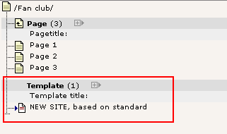
Now the interesting moment comes - did this solve the problem? Hit the frontend again:
And yes it did! Of course the pages are empty since no content exists yet. And the template must be configured with the "Constant Editor" with other colors etc. That is the next step now.
It is probably not a surprise to you that the page id sent to the browser was "34" - the id of the page from the site. But which one of the two websites in the database will be displayed now if we do not send any id? The answer is the first one - the "FC Bigfeet" site.
Well, if that is the case how do people every get to visit our new site? Read on...
When you want to manage multiple websites inside your TYPO3 database you simply make sure they have a separate domain each. For instance the "FC Bigfeet" websites could have the domain "www.fc-bigfeet.com" and the fan club website could be "fanclub.fc-bigfeet.com" and also "www.fanclub.fc-bigfeet.com". The challenge now is to make sure that people get to see the right thing when going to the right domain!
This is a three step process:
Make sure that the DNS of all domains point to your webserver (trivial, non-TYPO3 related issue)
Configure your web server to direct all requests for the three domains to the directory with the TYPO3-website (.../quickstart/) - now a visit to any of the three domains will end on the "FC Bigfeet" main site.
Finally create a domain record for each domain you want to end up on the "Fan Club" website.
This is done by adding a new element to the root page "Fan Club":
Then enter the main domain name:
Save the record.
Create another one. This time for the alternative domain "www.fanclub.fc-bigfeet.com". Since this is basically a domain we use for "safety" we want it to redirect to the "fanclub.fc-bigfeet.com" domain. This is done like this:
Save it and view the page in the list module:
Nicely the two records are found in the List module display of the "Fan club" page elements. If you configured everything correctly a hit to "http://fanclub.fc-bigfeet.com" will show the new website and the "http://www.fc-bigfeet.com" URL will show the old one (default). Of course it didn't work - unless you hurried to register these domains lately!
Behind the scenes this is what happens: TYPO3 detects the domain name. Then it tries to look for a domain record. If such a one is found (like "fanclub.fc-bigfeet.com") then TYPO3 locks itself to that page as root page! This means that any request for page ids must be within the branch where the domain record was found! If a page id from the "FC Bigfeet" is requested on the domain "fanclub.fc-bigfeet.com" then TYPO3 will just show the front page of the "Fan Club" website!
The feature "Create template for a new site" of the "Info/Modify" view is very practical for starting up new websites.
If you just click it without selecting a standard template you will still get a new template record - but without any standard template and with a few lines of dummy TypoScript content to get started. This is the way the pros are normally starting up new custom made sites and then they work from there with their knowledge of the TypoScript etc. This is precisely the process suggested in the tutorial "Modern Template Building, Part 1".
When you want to start your own new websites you normally do it with a clean database. If you want that - a totally clean database with no pages, no content and only one "admin" user - then download the "Dummy" package from typo3.org. This is designed as start-up framework for new projects.
Since you are still a newbee with TYPO3 - or if you are just very lazy - you might also start up new projects with the "QuickStart" package - the one we are using here! The reason is that it already contains a bunch of users, a template, some content already in place etc. You would just have to remove the template, make a new one, rearrange pages and add new content while removing the parts you don't need. This is probably a good idea if you need to get started quickly.
Since the "template" is the crucial point of your implementation possibilities with a CMS it's very important to stress that this tutorial does not to any degree display the depth of possibilities with templates in TYPO3. On purpose I have used a very boring standard template which has a touch of amateur look over it. That is fully on purpose so we don't get lost in these issues. Remember, the point of this tutorial was to teach you principles of TYPO3. Those principles also apply for professional use of the product. But the implementation of templates will be much different.
So please notice: This tutorial was based on a fully functional website with a template already in place! You have not (in details at least) learned how to implement your own custom design. That is what all of the remaining tutorials is about (almost) - so the "FC Bigfeet" site is only meant as an hands-on introduction - customizing templates is the big science not covered here!
Just to nail it to your mind for sure, this are some facts about templates in TYPO3:
You can implement any design you like, the way you like.
You can have any number of menu levels.
You can have multiple sites, multiple templates.
You can have pages in any number of languages.
You can have multiple content areas (columns) on a page.
You can integrate all kinds of external data sources through PHP written plugins.
You can add any number of web applications to run on various pages in TYPO3.
You can extend everything with PHP (with full backwards compatibility!).
You can do anything - some things are just more straightforward (most typical things), other things are more tricky (less typical things).
If you need a look at the feature list of TYPO3 you can find it here on typo3.com.
The tutorial "Modern Template Building, Part 1" is the document to read if you want to get into the template building as it is recommended for newbees on a professional level. That document is a sequel to this one so after finishing this tutorial, just go on to that one!
Let’s look at another interesting module - the File module:
This works by the same principle as the List module for database elements - it has a folder tree and a list view of files in the folders.
The folder displayed by default (for "admin" users) is the "fileadmin/" folder located under the "quickstart/" directory. Here a little image archive already exists. These files are not used on the website directly. If we want to do so we can either a) link to the files from content elements or b) pick the files in the process of selecting files for content elements.
The latter approach is the most typical. Try to insert an image element on the front page of the "Fan Club" site:
And instead of uploading one image at a time by the "Browse" button you can select multiple files already on the server!
After saving the files are attached to the record. Notice that contrary to what you might think the files are now moved to the uploads/pics/ folder where TYPO3 stores images attached to page content elements.
And on the front page you have got a nice block of images:
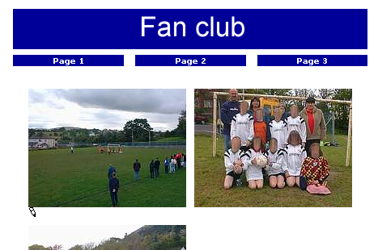
Notice that there are really a lot of options related to images in TYPO3. Enable "Show secondary options" and see for yourself:
The most important option is the "Position" selector (#1). With this you tell TYPO3 how to position the block of images (there are three images, remember!) in relation to text. This is mostly important when using the "Text w/Image" element type of course. Secondly the "Columns" selector (#2) is important since this is responsible for organizing the images into columns, in this case "2". The "Border" option (#3) is nice since a black border is surrounding the images and that looks good most of the time. The "Width" field (#4) determines the image block width in pixels - very useful as well. The "Link" box (#5) can set a link for the images unless the "Click-enlarge" option (#6) is selected which will enable a link for all images which opens a window with an enlarged version inside! Very nice feature for galleries! Finally the "Caption" field is for the text under images.
And finally remember:
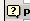
The little funky "?" icon - help at your fingertips! Use it!
If you use the Images module instead of Filelist you will have a larger view of the images:
Alternatively you can enable the thumbnails view in the Filelist module:
... and that might be good enough for you:
One way to get images to the archive would be through FTP. But of course you can upload directly in the File module. Just click the folder icons:
This will bring up a form where you can upload files:
Likewise files can be renamed, copied, deleted etc - all by the functions available in the context menus you are familiar with already:
If you are not so lucky you didn't see some of the images in these screen shots on your own server. This might be because ImageMagick was not properly detected on your server. If you used the Windows Installer Package for installing the QuickStart site it should work. But with a custom installation - and if you didn't install it yourself - you probably didn't see all the great things happen.
You will have to consult the installation documentation available to get those problems solved. Also remember there is a mailing list for installation questions.
The List module contains some very powerful features for managing the database content. Let’s just think about it for a moment: All the page and page content related business went on in the Page module - it was designed for that! All template editing we did was done in the Template module - it was designed for that! But on the lower level, behind the scenes, the List module is the ultimate place to manage both pages, page content elements, template records, domain records, users and groups, guest book items and whatever elements TYPO3 is capable of managing!
You might already have used the clipboard to move a content element from one page to another. But let’s see what happens behind the scenes:
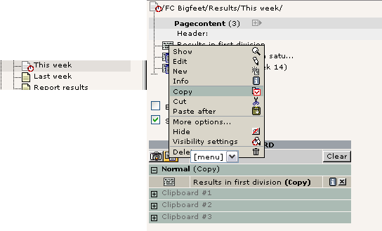
On the "This week" page we have three content elements. View the page content with the List module, enable the "Clipboard" checkbox and select "Copy" for an element. Notice how this element gets registered in the clipboard that is shown now! (You will have to refresh the List module before it's shown).
If you select another element the first one is removed. "Cutting" element is the same - it's just being registered as "Cut" instead.
If you enable "Extended view" checkbox you can see a whole panel of nifty little buttons which are all great shortcuts instead of activating the context menu all the time:
Try to play around with the buttons here!
Back to the clipboard - select one of the "numeric pads" now:
Now you can tick off the elements to select for the clipboard - thus you can have not just one but multiple elements selected at once!
Select the first two elements and press the "Transfer..." button:
The elements are now registered for "cut" on the clipboard:
Pasting them onto another page is not just a question about going to that page and click the "Paste into" icon:
After confirming the warning...
... you will see the two elements moved to the top of the page and the clipboard pane #1 emptied:
You can do the same thing for files in the Filelist module. Just a quick view - and you can see the principles are the same:
The list module also uses the check boxes for elements for another purpose - selective multi editing. To enable this you must first of all click the title of the table in the List module (#1):
This will enable the extended mode. Here you can select additional fields from the table you want to view as well (#2). Select the "Type" field for now. This will make the "Type" field appear in addition to the "Header" field already there.
Simply click the little pencil next to the "Header" label:
You will see this next:
This feature allows you to edit the same field from a large number of records in one stroke of the pen! Very comfortable!
You can do the same for both the Header and Type field at one time - just use another edit-pencil:
The result will be almost the same form - but with an additional field:
The really cool thing is if you tick off only some of the listed records:
Then you will - guessed it? - only get to edit those two!
Powerful stuff.
Now do the math yourself for the rest of the buttons! Play around with them now that you have the chance with this test website.
The final steps in our efforts to get this website for "FC Bigfeet" running is to look at distributed maintenance - a core requirement to a CMS.
We already discussed the difference between frontend and backend users and how backend users were located in the root of the page tree:
Three users already exist. Let’s see what they can do. The best way to do this is to logout as admin and log in as one of these users, one at a time. All passwords are "football" for now.
When you log in as "christine" you will see this when you activate the Page module for editing:
Only one page!! Yes, "christine" is allowed to edit only one single page, the "This week" page. That is her responsibility. We don't want her to tamper with anything else - just that page.
This is quite cool - she only gets to see the page she needs to see. So not only does it reflect permission management - it also helps make the system more intuitive and user friendly. As you can see most of the backend modules are not shown to Christine either. The menu to the left contains only the "Page" and "View" modules in addition to the "Help" main module which does not require special permissions.
Now, log in as "jonathan":
Jonathan is the trainer of the Youth section of the club. So he is put in charge of the pages in relation to that! Just like with Christine he can see only the things he should see.
Contrary to Christine he has also been granted access to the Filelist module: If you look what is in there you will see a slight difference to the view you get as the "admin" user:
The root folder is not "fileadmin/" but the Image Archive folder directly!
Now we want to know how the users "jonathan" and "christine" have been set up! How did he do it, that guy behind all this? Well, log in as "admin" again and let’s explore it!
Try to select "Edit" for the two users, "jonathan" and "christine". You will see that their profiles are "identical" in two areas: They have the same group membership (#1) and they both have a "DB mount" (#2, the starting page for their individual page trees). But jonathan is also allowed access to the "file" and "file_list" modules (#3) and in addition he has been assigned the file mount "Image Archive" (#4). This makes sense if you think about it since those features were the ones we noticed when we logged in as him!
The file mount assigned to "jonathan" is a relation to a simple record created in the page tree root as well:
When you edit it you will see how logically it is configured:
Simply, the directory "Image_Archive/" (#1) is entered as the PATH and the "BASE" field is configured to interpret that path relative to the "fileadmin/" directory (#2). That simple. When Jonathan has a relation set to this record he will have this directory mounted in his Filelist module!
The DB mounts (database mounts) are very easy to understand - basically they point to the page in the whole page tree which you want to become the root page in the page tree the user should see! As you see it couldn't be more easy to give a specific user access to a specific part of the page tree - just set the fields value to that page. Or two pages even! You can add any number of "DB mounts" as you like!
Ahh, yeah. One note to "DB mounts" - if the user has no read access permission to the page and sub pages of the DB mount then it really doesn't matter whatever you have configured - it will not work! And what is read access then? Well, each page has a permission setting for access like the file system on a UNIX server - there is an owner user, an owner group and then permission settings for each in five different categories; read page, edit page, delete page, new subpage and page content. Normally the default settings are fine enough and using the DB mounts to assign access is probably the easiest way to go. If you run into trouble, just set all permissions to "on" - that will make green stars over the full line (see image below). Of course, if you want to really know the ins and outs of this, go to the Inside TYPO3 document - here you will get the hairy explanation.
Probably the best way to show you how page permissions should be set is to view the current permissions of the page tree. This is done by the "Access" module.
When you look at the ownerships of the pages you can see that "jonathan" actually owns a few pages. He might have been the creator of those. When you create a page you become its owner automatically.
But the main point is that the group "GENERAL" is the owner group of the pages that Jonathan and Christine have access to - and since they are both members of this group they can access the pages alone by this fact (still they are always restricted to work within their DB mounts!). The only thing they cannot - at least "christine" since she doesn't own the "This week" page - is to delete the page with a membership of the GENERAL group. You can see that when you click one of the pencils:
As you can see the "Delete page" right is not set for the owner group of one of those pages. You can do that if you need Christine to delete it - but most likely she should not be able to do so. In fact you might even restrict access further by not allowing her to create sub pages nor edit the page title:
The result is this in the permission overview:
With the module "User Admin" you can actually validate that "christine" now has the correct permissions to this page:
This will tell you right away what the combined permissions will be for her:
The first two green stars mean "Read page" and "New content on page" - the red crosses means "Cannot edit, delete and create new pages"
The same view for jonathan might be worth a look:
This clearly shows what we would expect - the file mount and the webmounts as we experienced them earlier. Jonathan cannot delete the main page "Youth Section" though.
The User Admin module is a great tool to evaluate user settings, compare users etc. Indispensable when you have many users and want to make sure you have control over their rights!
Let’s look at the GENERAL group which "jonathan" and "christine" are both members of - what is inside it?
The "Include Access Lists" is the important point to notice here since that is the reason why we have all these options listed! Apart from those the group can also contain DB mounts and File mounts which will then apply to all users that are members.
Looking at the access lists you will see that (#1) membership of this group will grant access to the Web, Page and List module (unfortunately you will have to know that these codes are the equivalents of the names you know from the menu...).
Secondly the tables that "jonathan" and "christine" are allowed to edit are listed (#2). Now, can that be true? Can they only view the pages and page content tables? Well, let’s try and log in as "jonathan" again and then try to create a new element:
How interesting - only pages and page content elements could be created. No users, no guest book elements, no news elements. Only pages and content elements.
Why this? Well, because Jonathan should not worry about anymore than this! He is not the guy in charge of the news, right!
This field (#3) dictates what page types Jonathan and Christine - or members of GENERAL group - should be able to select. Let’s make the "Jonathan-test" again and edit a page header:
With Jonathans login we try to create a sysFolder. Will we succeed?
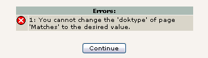
Nope. Sorry, Jonathan. Cannot do.
This is a loooong long list. But important. And powerful! But it takes a little background to get it:
When tables and fields are configured in TYPO3 (in the internal global PHP array, $TCA) some fields are marked as "excludeFields". This means that the fields are not allowed to be edited unless you have been granted special permission - that is what the "Allowed Excludefields" list does!
This is easy to understand if you take a look at what "jonathan" sees when he edits a page header:
Not an impressive amount of fields. In particularly not if you compare it with what you see - the "admin" user:
The reason for this difference is that
a) most of the fields in the pages table are marked as "excludeFields" - hence cannot be edited by default - and
b) that the GENERAL group only allows access to some of these "excludeFields" - according to the list this includes the "Type", "Hide page", "Start" and "Stop" fields!
So in fact we should be happy that Jonathan actually can edit the fields "Type", "Hide page", "Start" and "Stop" since he wouldn't have been able to do so if the GENERAL group didn't assign that specific permission!
Maybe you have noticed in the process of logging in and out as different users that an icon like this can appear:
This is just a warning to users that someone else is working on this page at the moment - records are not truly locked in TYPO3 since access to a record should be allowed if people have access. But this warning is a nice touch since it helps people to avoid conflicts.
Well, with all our brilliant knowledge we can now create a user who should be in charge of the second website in our database - the Fan Club site.
Users are just records - create a "Backend user" record:
Enter the username, password (football), group membership and the DB mount:
Save "phil".
In the User Admin module, check that "phil" is correctly granted access to the "Fan Club" site:
Oops - typical error. The page permissions are not with us here! But that is simple to change - go to the Access module:
Edit the permissions for the root page of the site:
Then set the owner and group and make sure the recursive setting is selected - this will apply the changes for the root page to subpages down to 1 level:
Nice:
In the "User Admin" module "phil" checks out fine now:
Finally log in as "phil". A neat trick is to just press the "SU" (Switch User) button in the User Admin module - that logs in without the user of a password (for "admin" users only of course...):
And "phil" really checks out well - he has access to the pages of the new website!
It's that easy.
Sometimes you need more than just assigning permissions for users to edit parts of a website - you might need to have a certain cycle in place where the job to create content is passed on to a user who does it but cannot publish without a review from a person responsible for the final content. Having such an approval cycle is exactly what workflows are for. In other cases they are just a useful way to collaborate on content because you can pass it back and forth between people in a work group.
So what is this in practice? On the "FC Bigfeet" site you will already find a simple workflow in place. The workflow is designed to let a user called "news" receive the task (To-Do item) to create a news-item for the website. When he is done he sends the To-Do task back to the sender who will review the contents and if all is OK, he will finalize the process which means the item is automatically moved to the news archive and possibly shown on the front page as well!
First, let’s take a look at the user called "news". Try to login as "news" (password "football"):
You have been used to see the Page module and some other stuff - but the "news" user has been restricted to see only the Task Center module! This is enough for him since he will just have to check his Inbox of Tasks. That is empty at this point, so he has not been assigned any tasks yet.
Well, logout again and return to the backend as the "admin" user. You will now start a new workflow process by assigning a To-Do task to the "news" user.
So go to the Task Center module, click "Tasks"...
Then create a new workflow. There is only one kind right now (you will be shown how to configure other workflows later):
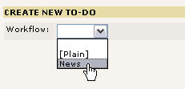
Now
you will have to fill in a form like this:
Most importantly you have to select a target (#1). This can be either a group or a specific user. We have selected the user "news" as we planned. Then a title (#2) and description (#4) wouldn't hurt - this is simply the job description the target user will see - to make sure he knows what to do when he reads this. The deadline (#3) will set the deadline of the task and later it will help you to keep track of which To-Do items have passed their deadlines (hopefully none of course).
Finally you can have the system send an email (#5) to the target user when you press the "Create" button - cool, if the target user is not exactly a TYPO3 junkie logged in all the time - then most likely sending him a mail is a good idea! (Requires the PHP function mail() to work!)
After the creations you will be returned to your overview of To-Do elements:
The "Outgoing To-Do items" are the ones you have created and which are awaiting some action from another person. In this case the "news" user.
Click the title if you want to see the details:
As you can see the information is all there. Currently no status has been assigned from the "news" user.
Log in as the "news" user:
Tip: If you start a new browser window of Microsoft Internet Explorer from the icon on your desktop (contrary to using CTRL+N) then you will be able to log in as another user - the "news" user - and thus have two different windows running as a user each. This is possible because Internet Explorer doesn't share cookies between those two windows.
In the Task Center the "news" user will see this:
Nice. The "News" task is there! Click it in the left frame. You will now see the details as you did before as "admin" user:
As the "news" user you select "Add Status" to "Begin task now", then enter a status note like "OK!" and press the button.
Now you will see a form for a news item appear:
This item has just been created for you as a part of the "Begin task now" status you added. This element is attached to the task now and all you need to do is enter the content. When that is done and you press "Save document and close" you are returned to the Task Center. Pressing the title of the To-Do Item again allows you to see the updated details:
As you can see the element is attached here and by clicking the edit pencil you can edit it again - until you are ready to inform the "admin" user that now it is all done!
When the item is edited and ready to be published (in your opinion) you change status to "Pass on to another user/group" (this could also have been used to pass the task on to a colleague if someone else should rather solve the task!), select the recipient (in this case the "Sender"), add a note if you find that necessary and press "Send new status".
And your To-Do list is now blank, just waiting for the next job.
Back as the "admin" user you will see that the To-Do task has been returned to you now:
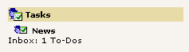
When you click the item title here you will see the details. Click the edit pencil in order to review the content:
Apart from checking the content of the news item (a little tame here, isn't it... ) you should also determine whether this element is worthy of a position on the front page. That field was not accessible to the "news" user - it is an excludeField.
When you are happy with the item you activate the final stage by selecting "Finalize workflow" in the "Add Status" selector:
That's it. This step finally moved the news element to the news archive and made it online on the frontpage:
The last thing now is to dump the To-Do item in the garbage bin: Simply check it "Done" and select the action "Delete marked To-Do items":
A workflow like the one we have just cycled through is configured as a record in the page tree root. As with all records in the page tree root you will have to be "admin" to edit and create then:
Such a record contains these fields:
Apart from a straightforward title and description (#1) the record first and foremost defines from which table (#2) in TYPO3 elements should be created! This means the workflow system can be used to control the creation process of not just pages and page content elements or news items - but any item!
Obviously some tables are more interesting in this context than others but the principle applies to it all. As you wish.
The next principle of great importance is the "Draft Page" (#3).
The sysFolder "News items draft page" is created as a safe repository where the "news" user can create whatever he likes and it will harm no one. This sysFolder works as the Draft page. When the "news" user sets the status "Begin task now" the News-element attached to the task is automatically created in this folder!
The News-item stays in this folder until the workflow process gets finalized by the sender - then it is removed from here and inserted on the "News" page - as the "Move to page when finalizing" field (#6) obviously indicates.
Between the "Draft page" and "Final page" you will find the fields setting "permissions" for the workflow. By "Target groups for workflow" you specify which users can receive a task for creating this item. In this case only users that are members of the "News editor" group can receive the tasks.
The workflow here is a simple "[Editor] -> [Author] -> [Editor]" workflow. In some cases you want a third person involved. That would make the flow look like "[Editor] -> [Author] -> [Reviewer] -> [Editor]". If that is the case you create a relation to a reviewer user in field #5.
Finally the "Unhide when finalizing" flag is telling the finalizing process whether to un-hide the element if possible upon finalizing.
Did we forget something? Ahh, yes, the "Groups allowed to assign workflow" field - that was not discussed. So let’s just lean back and let the little funky "?" icon do the talking:
Just remember...
In order for this workflow to work - in terms of permissions for the "news" user - you will have to make sure of a few things.
The "news" user is member of the "News editor" group. That group has "Access Lists" enabled like the "GENERAL" group we already know. But the settings are of course different:
As you can see (below) only the User and Task Center modules are enabled, the News table is the only one allowed for editing and the Allowed Excludefields are of course selected only in relation to the News table:
Those must be properly set of course. In this case - since we are creating elements on a page - we can do with this setting (below); the "News editor" group as owner with permission for creating new page content:
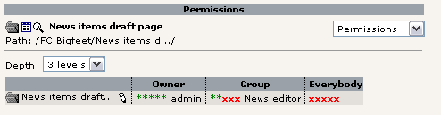
Also - even if no page tree is available for the "news" user - he needs the DB mount set:
This is because TYPO3s default permission system even checks if a page where a record is created is within the DB mounts of the user.
In itself we have a little To-Do list for the development of the workflow system in TYPO3. The most obvious need is the ability to (re-) enter an existing element into a workflow. That is still not possible. Or maybe is has become possible in the mean time since this tutorial was written. In that case - please remind me to remove this notice... :-)
Well, this concludes the "Getting Started" tutorial. It was probably a little more than getting started, but that can't hurt you with TYPO3 because you will have something new to learn every day for the next three months anyway.
First of all - all work and no play makes Jack a dull boy - and you better go playing with TYPO3. Explore it! Click the buttons while you can! Some day you will have a production site running and then you won't want to experiment with features you have never touched before, right!? So don't hold yourself back.
There are a number of tutorials which are great ways to learn more:
"Modern Template Building" is a tutorial in three parts divided into two documents. Part 1 is the next step to take after this "Getting Started" tutorial. Part 2 & 3 is for more advanced users who have developing experience with PHP.
The "GoLive" tutorial (that was the original name) - this is a miniature version of the "Modern Template Building" tutorial. Takes the same approach with an HTML-file and teaches you how to implement that with subparts and markers etc. This is an older approach, but revised lately.
The "Frames" and "References" tutorials - they are sequels to the "GoLive" tutorial.
More information on non-development issues (Users/Administrators) can be found in the popular "Handbuch für Redakteure" by Werner Altmann and written in german (translations might be available by now!). This is a User Manual about editing, creating content etc.
If you are a skilled developer and want to
create an extension you can wrestle with this tutorial from Oliver
Hofmann - Creating
a basic extension. Karsten Hachmeister has likewise provided a
popular
guide.
The documents "Backend
programming "and "Templates,
TypoScript & beyond" are also technical tutorials on
integration of your own PHP-code with TYPO3. They do not
emphasize the Extension Architecture of TYPO3 so much though.
For that you need a one-stop link - the mailing lists.
From the other end of the documentation tree of TYPO3 you will find the references and manuals.
TSref - the indispensable "TypoScript bible" - lists every property of core TypoScript objects. For extensions with plugins you will need to look for property tables in their respective documents, not the TSref.
TypoScript by Example - the TypoScript example collection that will go easy on you compared to TSref. This is a much more beginner friendly approach to learning the nuts and bolts of creating powerful graphical menus etc. and other objects in TypoScript.
Inside TYPO3 is the manual on the core of TYPO3 - this is for people with extensive developer experience since it contains all the low level descriptions of the concepts in TYPO3s core. A very important document if you need to understand the principles deep down.
Last, but by no means least: Your next step! Chapter 2. How to build your own, custom template design with TYPO3!
The major part of what is left to learn from tutorials and other developer resources is how to implement your own template designs. As mentioned multiple times the next step in this respect is to continue with the tutorial called "Modern Template Building, Part 1". This takes you through a case story with a three person web team with a developer, designer and content contributer. That is where you should go now!
Thanks for reading so far. And welcome to the community!
- Kasper Skårhøj
...finally at the end page on a late wednesday night.